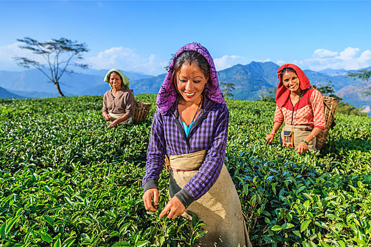

Darjeeling, known as the “Queen of the Hills,” enchants visitors with its panoramic views of Kanchenjunga and world-famous tea estates. The Darjeeling Himalayan Railway, a UNESCO World Heritage Site, offers a nostalgic toy train ride through misty hills and lush greenery. Kalimpong, with its monasteries, orchid nurseries, and colonial charm, provides a peaceful retreat for nature lovers. Mirik’s picturesque Sumendu Lake, surrounded by pine forests, creates a perfect setting for relaxation and boating. These hill stations, with their cool climate and scenic beauty, make West Bengal a paradise for travelers seeking tranquility.
